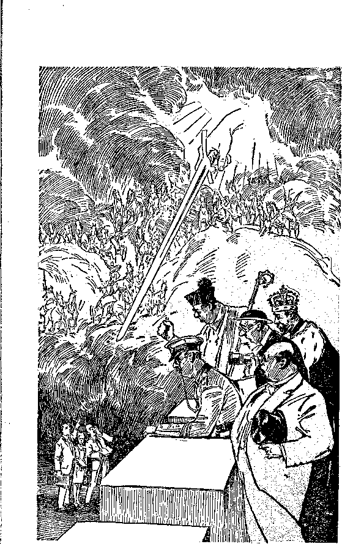
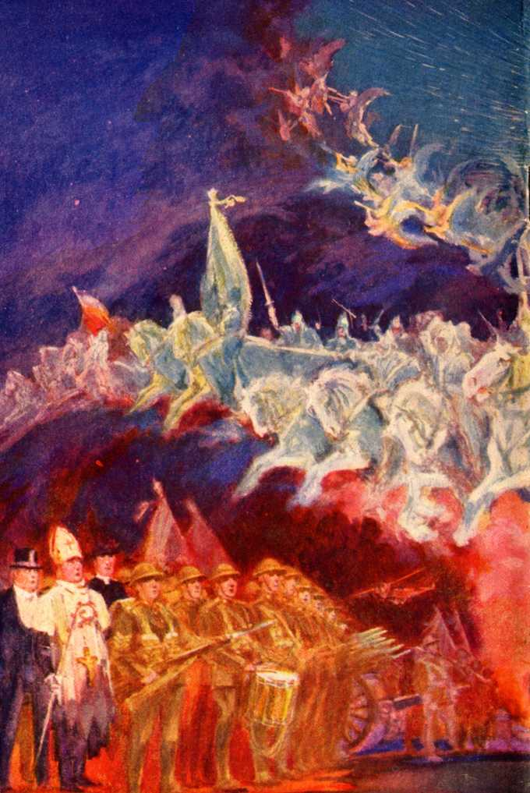

NALV

explained in Seven Bible Treatises by
J. F. RUTHERFORD
Page
3 Satan’s Organization
11 Jehovah’s
Organization
20 The Terrible Image (Part I)
29 (Part II)
37 Preparing for War (Part I)
46 (Part II)
55 Executioners .
:--------------------------------------------<.
Allow your aspirations for yourself, your hopes for other people, to soar to sublimest heights and then learn, after reading Judge Rutherford’s books explaining the Bible, how pygmean is your most idealistic conception of the future compared with the realities God has purposed to shortly bestow upon the human fdmily here on earth.
A —..........- ' ------- ----------S*
Copyrighted 1932 and Published by
WATCH TOWER BIBLE AND TRACT SOCIETY International Bible Students Association' Brooklyn, N. Y., U.S.A,
Branch Offices: London, Magdeburg, Paris, Toronto, Strathfield, Cape Town, Berne, Copenhagen, Stockholm, and other cities.
Made in U.S.A,
SATAN is most expert in the practice of fraud and deception. His very existence he keeps dark to most creatures, in order that he might more completely deceive and mislead them. For this reason one of the names given him in the Bible is that of Serpent, which means deceiver. His purpose is to cause all men to deny and curse Jehovah God; and, knowing that he could not accomplish his purpose by direct attack upon order-loving people, he employs fraud and deception. He resorts to all manner of lying and crime, and for this reason Jesus said of him, in John 8:44, that he is a liar and the father of lies, and a murderer from the beginning. Satan is a spirit creature and therefore is invisible, to human eyes, but his wicked works appear everywhere. He has a powerful organization, part of which is visible to man; and part of it is invisible. In Ephesians 6:12 the record is that his organization consists of principalities, powers and a host of wicked angels.
An organization is a systematic arrangement employed to carry on a fixed purpose. Jehovah is the God of order, and with him everything is orderly. When God laid the foundation of the earth as a place for man’s habitation, the. scrip-3 ture at Job tells, he summoned his heavenly host and gave them some information concerning his purpose. Lucifer was then a part of God’s organization and was present, which is shown by the statement of prophecy. He was the chief one over a separate division of God’s universal organization. The perfect man was placed under him. Filled with pride and covetousness, Lucifer rebelled against God, who then changed his name and thereafter called him Satan, Serpent, Dragon and Devil. Lucifer, now called Satan, challenged Jehovah God to put a man on earth who would always remain faithful and true to Jehovah. That raised the issue as to the supremacy of Jehovah and the truthfulness of his word. Satan declared his own ability to turn all creation against God, and Jehovah accepted his challenge and permitted him to carry out his threat.
The Scriptures show that many of the. spirit princes and angels followed Satan’s wicked lead, and these, together with their chief, form the invisible part of Satan’s wicked organization. Satan began the visible part of his organization by naming Nimrod as the. first ruler amongst men and whose name means the “rebellious one”. Nimrod built the city of Bab-il under the supervision of Satan in defiance of Jehovah God. This was the very inception of the Devil’s earthly organization. The god of that city was called Bel or Baal, which is another name of Satan the Devil. Religion was a prominent element of Bab-il or Babylon, and the city had its priests and clergy which led the people in the worship of the Devil. From that day until the present time Satan has made religion prominent in every world power on earth and has used religion as an instrument to keep the. financial and political elements of the nations of the world under his supervision and control. By his prophet Isaiah, in the fourteenth chapter, Jehovah definitely identifies Lucifer the Devil as the invisible founder of Babylon and the ruler of the nations of the world. The words of the prophet are: ‘Take up this proverb against the king of Babylon, and say, How art thou fallen from heaven, O Lucifer, thou son of the morning! thou which didst weaken the nations? By his prophet Jeremiah, chapter fifty-one, God calls Satan by the name of Dragon, indicating his propensities to devour. From the time of the foundation of ancient Babylon all false religions are designated in the Bible under the title- of. Babylon, because they are the creation of Satan. Babylon is referred to in the Scriptures as a great whore, because she gives birth to all false or Devil religions.
Ancient Egypt was the first world power formed, and commerce or money power was predominant there. It created and maintained a great military power, and controlled the politics and the religion, which was of the Devil and which was carried on by priests and clergymen under the influence and control of wicked angels.
When Jehovah directed Moses to lead the Israelites out of Egypt, he said, as appears in Exodus, chapter twelve: “Against all the gods of Egypt I will execute judgment; I am the Lord [Jehovah] J Because Egypt was the. first world power and under the control of Satan the Devil, the Bible speaks of all nations of earth under the symbol of “Egypt”, because Satan is the god of the whole world.
Then followed the organization of ancient Assyria, and it became a world power with Satan as its god. Both the Bible and the facts of history show that the controlling elements of Assyria were politicians who practiced the Devil religion as a matter of expediency and under the direction and influence of an evil priesthood. The three great world powers, Egypt, Babylon and Assyria, were all the Devil’s organization; and the. Bible discloses that these three elements amongst men are always used to rule and control, to wit, commercial, political and religious factors. There is always- a mystery about the religions.of the world which are employed to seduce and mislead the people and keep them superstitiously in subjection.
God caused the Israelites to be organized into a nation for his own purposes, and his primary law given to that people was this: “Thou shalt have.no other gods before, me.” The purpose of that law was to safeguard the Israelites from the wicked influence of the Devil. Time and again the Israelites fell away to the satanic re-
ligion, and after many warnings from Jehovah he permitted them to be taken captive by Babylon. At that time he took away the right of the Israelites and all-other peoples to rule in the earth in his name, and declared his purpose of . permitting none to have it until the coming of Christ. Through his prophet Ezekiel, in the twenty-first chapter, he directs the dethroning of Israel's last king and then says: T will overturn it, until he comes whose right it is to rule? By another prophet God discloses that the time or period of that waiting would be 2,520 years, which ended in 1914 and which marks the second coming of Christ with the right to rule the world.
Christ Jesus with his faithful apostles founded true Christianity. The early Christians faithfully served God and suffered much persecution at the hands of those who practiced the Devil religion. Shortly after the death of the apostles ambitious men came into the church and got control; and when “organized Christianity" became the religion of the nations Satan was in control, and it became part of his organization. Because that organization has always claimed to represent Christ, so-called “organized Christianity" has been the great instrument employed by the Devil for deceiving the people. There have always been some good men in the church, to be. sure; but the history of the world shows that there have been more crime and wickedness committed in the name, of Christians or “organized Christianity" than of any other religion under the sun. The cruel Inquisition is one instance in proof of this. The one hundred years" religious war in Europe is another. And today all manner of wrong is practiced in the name of Christianity. The United States takes the lead among the so-called “Christian” na- . tions, and the president of the United States, in a speech only a short time ago, truly said that more crime is committed in the United States than in any other country on earth. The reason is that Satan the Devil is the god of this world and all nations of “Christendom” form a part of his organization.
When Jesus founded the true church, he told the disciples that Satan is the ruler of this world of darkness; that Jesus had taken his disciples out of the world, and that they must keep themselves separate from the world. The apostles understood that a true Christian must be separate from the world and under the direction of the Lord, and they so instructed the early church. In Romans, chapter twelve, the instruction is given to the true Christians in these words: “Be not conformed to this world.” It is well known by all that “organized Christianity"" is a part of this world and is conformed to the world, and that the leaders in the churches are most active in the political and military affairs of the world.
In June, 1929, a delegation of clergymen visited the president of the United States and stated that they had formed an organization for the suppression of lawlessness, and then put themselves under the direction of the president and requested him as the political ruler to direct the course they should take. Thus they acknowledged themselves a part of the world and hence a part of Satan’s organization. Had they been representatives of the Lord, they would have told the president the real cause for crime and pointed out to him God’s complete remedy therefor. Their activities as leaders in political movements and in military matters further connect them as a part of this world. To be sure, good and honest men have the right and duty and privilege of participating in politics; but when doing so, they make themselves a part of the world; and a clergyman by taking that course acknowledges he is a part of the world and hence a part of Satan’s organization.
The Israelites were God’s chosen people and prophetically foreshadowed "organized Christianity”. God. cast the Israelites away because they made themselves a part of the world or Satan’s organization. "Organized Christianity” is exactly the counterpart of faithless Israel, and concerning such God caused to be written, in Jeremiah 2:23, thus: How canst thou say, I am not polluted and have not gone after the Devil ?’ It is recorded, in Genesis 4:26, that early in the history of man an organization of men was formed and hypocritically called themselves by the name of the Lord. Hypocrisy has been practiced ever since. It has been and is openly practiced in "organized Christianity”, so called, and the reason is that such organization has fallen into the-trap of Satan and made itself a part of his organization.
Satan’s one great objective has been to turn the people away from Jehovah, the true God. What could better accomplish that purpose than a religion that calls itself by the name of the Lord and then puts forward preachers and teachers who destroy all faith in God and in the Bible by teaching such doctrines as evolution? As the religious leaders of the Jews called themselves by the name of God and were great hypocrites, as Jesus told them, even so the religious leaders of "organized Christianity” call themselves by the name of Christ and hypocritically so, because they deny God and Christ and the Bible as true. "Organized Christianity” has therefore fallen away to Satan and is properly called Babylon, because it is a part of the wicked organization.
The three elements that ruled ancient Egypt, Assyria and Babylon, to wit, the commercial, political and religious, now rule all the nations of so-called "Christendom”. The clergy and all such nations are prominent in politics. There is a book called Prophecy, which brings together all these Bible texts and the history of the world, which prove conclusively what constitutes Satan’s organization. The people must know these truths for their own benefit and protection. These truths are not published as a war upon
JEHOVAH’S ORGANIZATION '-JI men, but are published that both the rulers and the ruled may now learn that Satan has overreached so-called “Christianity” and has control of the whole world. The people must learn of God's organization, and I shall next speak to you about that. Learning the truth the people. will see that God's time has come to destroy Satan’s organization and that this he will do for the good of the people and for the vindication of his own name. When men and women come to you with books explaining the Bible prophecies, remember they are not book agents engaged in a commercial work. They are merely obeying God’s commandments to bring to the attention of the people the truths which the. Lord has now brought forward, that the people might learn. When all prejudice is put aside, and the truth is sought with unbiased mind, the people will see. that Satan is their great enemy. Then men will cease fighting amongst themselves and will turn to their true Friend, Christ Jesus, the world’s rightful ruler, and to the great God, who is the Giver of every good and perfect gift.
THE universal organization of Jehovah is frequently mentioned in the Bible under the name or title of Zion. It is made up of cherubim, seraphim and a’ host of angels, with
God as chief over all. The Prophet Ezekiel, in the twenty-eighth chapter, shows that Lucifer was once in the organization of Jehovah and that he rebelled and built up an organization in opposition to God. After the fall of man God began, according to his purpose, the development of a special organization as the offspring of a part of his general organization. God speaks of his general organization under the symbol of a woman, and in Genesis, chapter three, he declared his purpose to bring forth a “Seed” from this symbolic woman that would destroy Satan’s power. Jehovah abided his own good time to bring forward this “Seed” or organization. He has permitted Satan for many centuries to do all he could in defiance of God and to carry out his challenge. Satan has brought forth a Seed, which is his powerful organization, and with this he continues to reproach God. -
Jehovah employed many centuries in making living pictures by using the Israelites, and by which he foreshadowed the development of his “Seed”, or special organization, which “Seed” he has made the capital or dominant part of his great organization. Speaking to faithful Abra. ham Jehovah said: Tn thy seed all the families of the earth shall be blessed.’ That statement to Abraham was the beginning of the preaching of the gospel, or of the gospel age. In proof thereof it is written, in Galatians 3: 8, that God, foretelling that he would justify the nations through faith, preached the gospel unto Abraham, saying: "In thee shall all nations be blessed.’" In that prophecy Abraham represented Jehovah himself, and the 'Seed of promise’ necessarily must be the creation of God. That there might be no doubt about the matter, it is written, in Galatians, that the 'Seed of promise’ is Christ, the Messiah, which means God’s duly anointed or commissioned One to carry out his purposes. God provided that Christ, or his anointed organization, shall consist of Christ Jesus the Chief One, and 144,000 others, who must be made into the likeness of Christ Jesus. Therefore say the Scriptures, at Galatians 3: 27. and 29: "For as many of you as have been baptized into Christ, have put on Christ. And if ye be Christ’s, then are ye Abraham’s seed, and heirs according to the promise.” God declared that he would take these members of Christ from amongst men and each one of them under the most severe test must prove his faithfulness and devotion to God and hold fast his integrity. The completion of that promised "Seed”, therefore, will be full proof that Satan is the great liar and that God is all-powerful and can put men on earth who will hold fast their integrity regardless of satanic influence.
Before any man could be in line, to become a part of God’s organization the redemption of man from the judgment and its effects upon Adam must first take place. This redemption must be accomplished by another perfect man voluntarily going into death. Jesus was therefore made a man, and as a man he suffered death as the substitute for the sinner and thereby provided the ransom or redemptive price. Then God raised up Jesus out of death, not as a man, but as the divine Christ, exalted him above all creation, and gave command that all creations shall obey him. Jehovah therefore made Christ Jesus the Head or capital of his great organization and his chief executive officer to carry out God’s purposes.
With the faithful apostles Jehovah began the creation of the 144,000 who shall be associated with Christ Jesus and who shall form a part of the “Seed of promise”. These are properly called true Christians, because a Christian is one who is anointed or commissioned by Jehovah to represent him. These chosen ones must be obedient to God’s law, the primary part of which is, ‘Thou shalt have no other god before Jehovah.’ It is apparent, therefore, that anyone who claims that evolution is more, powerful than the God of the Bible could not possibly be a member of the ‘Seed of promise’. Each of the chosen ones must exercise full faith in Christ as the Son of God whose blood provides the redemptive price for man. Each one must fully devote himself to God and Christ and, being brought forth as a Son of God, must follow in the footsteps of Jesus. Concerning this it is written, in 1 Peter 2:21: “For even hereunto were ye called; because Christ also suffered for us, leaving us an example, that ye should follow his steps/" Why must they suffer? Because they must be faithful and true to God and bear witness to his word and name, and Satan and his organization cause all who thus do to suffer much. To his followers Jesus said, in John, chapter fifteen: "If they have persecuted me, they will also persecute you. If ye were of the world, the world would love his own; but because ye are not of the world, but I have chosen you out of the world, therefore the world hateth you/"
Satan and his organization, and particularly the clergy, persecuted Jesus. The same class of men persecute the true, followers of Christ even today. Satan has always reproached God, and it is written, in Romans, chapter fifteen, that the reproaches that reproached God have fallen upon all true Christians. These scriptures show that those who are of God’s organization cannot be a part of this world. Those who claim to be of Christ and who continue to mix up with worldly affairs are referred to in James 4:4 in these words: "Ye adulterers and adulteresses, know ye not that the friendship of the world is enmity with God? whosoever therefore will be a friend of the. world, is the enemy of God/" There is therefore a clear distinction between professed Christians who form a part of Satan’s organization and true Christians who are, of God’s organization.
Those who form a part of God’s organization must overcome the world, which means that they must hold themselves separate from the world. The Lord refers to “organized Christianity” as a part of Babylon, and then says to the true followers of Christ Jesus, in 2 Corinthians 6:15: “What concord hath Christ with Belial [meaning Satan and his organization] 1” and then adds: “Wherefore come out from among them, and be ye separate, saith the Lord, and touch not the unclean thing; and I will receive you.” To such as are in the way to become members of God’s organization Jesus says: “Fear none of those things which thou shalt suffer: behold, the devil shall cast some of you into prison, that ye may be tried; and ye shall have tribulation ten days; be thou faithful unto death, and I will give thee a crown of life.” Paul was a living example of these, and when his earthly work ended he wrote, in 2 Timothy 4: 7, 8: “I have fought a good fight, I have finished my course, I have kept the faith; henceforth there is laid up for me a crown of righteousness, which the Lord, the righteous judge, shall give, me at that day: and not to me only, but unto all them also that love his appearing.”
Jesus was a faithful and true witness of God. He came to the earth to be a witness to the truth. All who shall be of God’s organization must be conformed to his likeness and therefore must be faithful and true witnesses to the word and name of God. God commanded that all such shall be his witnesses. They could not be faithful and do otherwise. The men and women that come to your door with books explaining the Bible are not trying to convert you or to induce you to join something, nor are they book agents. They are merely carrying out the commandments of the Lord to bring to your attention the truth as a witness to the Lord's name. Satan and his organization bitterly oppose such work, but these witnesses must go on regardless of all opposition.
Christ Jesus, the Head of God's organization, is represented in the Scriptures under the symbol of a stone, which is called the "chief corner stone”, and his faithful associates are called "living stones”. God's prophet Isaiah, in chapter twenty-eight, wrote: "Therefore thus saith the Lord God, Behold, I lay in Zion for a foundation a stone, a tried stone, a precious corner stone, a sure foundation; he that believeth shall not make haste. Judgment also will I lay to the line, and righteousness to the plummet; and the hail shall sweep away the refuge of lies, and the waters shall overflow the hiding place.”
The laying of this chief corner stone relates to the second coming of Christ and the assembling of his faithful followers unto himself. Then adds God’s prophet: ‘He. shall be a stone of stumbling, and a rock of offense to many.' In 1918 a few clergymen at London issued a statement to the effect that the events coming to pass proved the second presence of Christ and his kingdom. Shortly thereafter all the ministers repudiated that manifesto, stumbled over Christ the King, and gave their allegiance to the League of Nations, even as the prophet had foretold. The faithful followers of Christ, in obedience to God's Word, continued to tell the truth, and this the prophet of the Lord says that they must do and that the truth will disclose the hiding place of the many falsehoods that have blinded mankind.
Prophecy frequently uses the expression “in that day", and it means a period of time beginning with the second coming of the Lord and the building up of Zion. The duty and obligation laid upon the members of Zion at that time is stated by the Prophet Isaiah in these words: “In that day shall ye say, Praise the Lord, call upon his name, declare his doings among the people, make mention that his name is exalted." (Isaiah 12:4) In obedience to this commandment the faithful followers of Christ now continue to proclaim the truth.
The city of Jerusalem was God’s city because he put his name there. It was also officially called “Zion".. A city is a symbol of an organization; hence God names his chief organization “Zion". It is written, in Psalm 132, “For
Jehovah hath chosen Zion; he hath desired it for his habitation." That organization must be an honor to Jehovah because, says the psalmist, in Psalm fifty, “out of Zion . . . God hath shined"; and again, “when the Lord shall build up Zion, he shall appear in his glory ” Zion is the name of God’s organization that produces the Seed of promise, to wit, Christ, and therefore the Seed bears the name of the mother organization.
What is the purpose of God in developing a “Seed of promise”? His express purpose is to vindicate his word and name. Every member thereof must be faithful and true to God. Each one must take an uncompromising stand on the side of Jehovah and have a part in declaring the honor of his name. Addressing his words to Satan immediately following the rebellion in Eden Jehovah said: “I will put enmity between thee and the woman, and between thy seed and her seed; it shall bruise thy head, and thou shalt bruise his heel.” The seed of Satan is his wicked organization. The Seed of the woman is God’s capital organization, which is Christ. Now Christ comes with his mighty host of angels to execute judgment upon the wicked one and his organization. The two seeds are now made, manifest, and bitter enmity is between the two. God is causing a witness now to be given that the people may have opportunity to take their stand on the side of the Lord and thereby escape Satan’s organization. The enmity between the two seeds or organizations will reach a climax in the greatest battle of all time. If will be a battle of Satan and his organization against the mighty organization of the Lord under the leadership of Christ. That battle will be an expression of God’s righteous indignation against the enemy and will result in the complete downfall of Satan’s organization, which has so long defamed his holy name. The great Seed of promise will be a vindication of Jehovah’s word and name. The righteous government established thereby on earth will bring forth health and comfort and life to the people. Then all who put themselves under the leadership of God’s organization will be for ever blessed and will thereby have a part in the vindication of the word of truth and the glorious name of Jehovah the Almighty God.
(Part I)
N THIS and in a subsequent speech examination will be made of the prophecy of Daniel relating to the terrible image described in the second chapter thereof. .
Jehovah caused prophecy to be written in hidden phrase, and purposed that it should be understood at the end of the world, where we now are. The Israelites were God’s covenant people, and prophecy relating to that people comes clearly within the announced rule. In 1 Corinthians 10:11 it is written: ‘Now all these things happened to them for types [examples]: and they are written for the admonition of those upon whom the end of the world has come.’
Babylon is the name given to Satan’s organization. The world power of ancient Babylon was Satan’s organization. Because of unfaithfulness God permitted his covenant people, the Israelites, to be carried away captive to Babylon. There he caused some types to be made and recorded which foreshadowed like things of far greater importance that must come to pass at the end of the world. “Christendom,” or the nations that call themselves Christian, claims to be the people of God, but is really a part of Satan’s organization; and the word “Babylon” properly applies to it. Among those of God’s people in ancient Babylon was Daniel, the faithful prophet of Jehovah. He foreshadowed a particular class of people on the earth at the end of the world, which people are wholly devoted to God and his righteous cause and who are in the world called “Babylon”, but not of it.
The ruler of ancient Babylon, Nebuchadnezzar, had a dream which gave him much trouble. He forgot the. dream and, of course, its meaning was unknown to him. Because his wise men could not tell him his dream he ordered all of them to be killed, and this included Daniel the prophet. Daniel prayed to Jehovah for help, and God gave him a knowledge of the dream and so much of the interpretation thereof as was due to be understood then. That dream, as stated by Daniel, was a prophecy and foretells what is immediately about to fall upon the world, and therefore it is now due to be understood. Since it relates to the vengeance of Jehovah God upon Satan’s organization, and the setting up of God’s kingdom, the Scriptures clearly prove that the due time is now here when the attention of the people must be brought to this matter. Now read Daniel, the second chapter. Parts of it I will repeat as time permits.
That the fulfilment of this prophecy applies at the present time is further supported by the language of the prophet who said, when he stood before Nebuchadnezzar: 'The God of heaven revealeth secrets and maketh known what shall be in the last days.’ We are now in the last days. Let those who hear give careful consideration to this prophecy, because its complete fulfilment is in the very near future.
Standing in the presence of the mighty potentate of the world Daniel, the prophet of God, said: "Thou, 0 king, sawest, and, behold, a great image. This great image, whose brightness was excellent, stood before thee, and the form thereof was terrible. This image’s head was of fine gold, his breast and his arms of silver, his belly and his thighs of brass, his legs of iron, his feet part of iron and part of clay. Thou sawest till that a stone was cut out without hands, which smote the image upon his feet that were of iron and clay, and brake them to pieces. Then was the iron, the clay, the brass, the silver, and the gold, broken to pieces together, and became like the chaff of the. summer threshingfloors; and the wind carried them away, that no place was found for them; and the stone that smote the image became a great mountain, and filled the whole earth/"—Dan. 2: 31-35.
The image as it appeared in the dream was in the form of a man, and represented something that is wicked, cruel and terrible. The head of the image was of fine gold, the breast and arms of silver, the belly and thighs of copper, and the legs of iron, and the feet part iron and part clay. That terrible image pictured or represented Satan’s organization, both that which is invisible and that which is visible to man, and which for sixty centuries has oppressed the human race. It has been wicked, harsh, cruel and terrible. In brief I now here submit the proof.
In Jehovah’s universal organization was Lucifer, called one of his Morning Stars in God’s organization. In Ezekiel, chapter twentyeight, Jehovah says to Lucifer: "Thou art the anointed [meaning, the duly commissioned] cherub that covereth [meaning, officer or overlord] ; and I have set thee so; thou wast upon the holy mountain [organization] of God.” Lucifer was made the head or chief one in a certain division of Jehovah’s organization, and under Lucifer there were many other creatures, including angels, perfect man and the beasts of the field. Gold is used in the Scriptures as a symbol of things divine or that which emanates from Jehovah God. The terrible image had a head of fine gold, proving that Satan was appointed to his high office by Jehovah God.
Lucifer defied Jehovah, rebelled against him and turned his organization against the Most High. While Jehovah could have killed Lucifer at once, his perfect wisdom dictated otherwise. God permitted Lucifer to retain his position of authority, but changed his name; and thereafter he has been known as Dragon, Satan, Serpent and Devil.
From the beginning that part of God’s universal organization over which Lucifer presided was in several divisions. His first officers and subordinates are described in the Scriptures as “princes”, who are mighty spirit creatures, and who in this terrible image are represented under the symbol of silver, which is a noble metal, but of less importance than gold. The Scriptures also show that those princes are more, powerful than the angels. Copper is next mentioned as forming a part of the terrible image. It is mistranslated in the Scriptures “brass”. Copper is inferior to silver and symbolizes the angelic division of Satan’s organization. The Scriptures plainly state that from the beginning Satan had a host of angels under him and that these followed him into rebellion. Daniel’s prophecy speaks of that portion of the image, or organization, symbolized by the “brass”, as Tearing rule over all the earth’. At once this suggests that the wicked angels have had direct communication with and influence over the rulers of the earth; and this explains why the rulers of the earth, such as the czar of Russia, have frequently consulted spirit mediums and thereby received information from the wicked angels. When Jesus was on the earth he made it plain that there was then a host of wicked angels having to do with the affairs of the world. Gold, silver and copper therefore picture the invisible part of Satan’s powerful organization.
The legs of the man-like image were of iron. The head and all other parts of the body are above the legs, of course, and the legs bear up and support the body and are controlled by the head. Iron is used in the Scriptures to symbolize harsh military rule. Daniel’s prophecy says The legs were of iron; and as iron breaketh shall it break in pieces and bruise’. The legs of iron picture the world powers that have, ruled the earth, beginning with ancient Egypt, and that have existed from then till now. All of these world powers have kept the people in subjection and ruled by oppressive military authority. « .
The feet of the image, forming a part of the legs, to be sure, were part of iron and part of clay. The financial and political elements of the rulers have provided for and employed the military in all the world powers, and such ruling powers are symbolized by the iron. Clay looks like stone, but it is not. A stone is used in the Scriptures to represent Christ. Clay is a camou-. flage and therefore is a means of practicing hypocrisy by making it appear that a thing is stone, when it is not. The clay of the image, therefore, fitly and exactly represents the religious elements of the. world powers, which have been employed for the practicing of hypocrisy in the name of Christ and for the purpose of keeping the people in blindness and in subjection to the rulers. In every world power religion has been employed to induce people to believe that the rulers act under divine authority. Today the religion of the leading nations of earth is called “Christian” and has been used and is used as the greatest means of hypocrisy ever employed amongst men. Leading the list of these important nations are Great Britain and America, claiming to be Christian and to rule, by divine right, and in which the three elements, commerce, politics and religion, join hands to control the people.
The entire image, therefore, represents Satan’s organization, both that which is invisible and that which is visible to human eyes. That Satan is the god of this present wicked world there cannot be the slightest doubt. Jesus on a number of occasions spoke of him as the ruler of this world and the author of crime and wickedness. In 2 Corinthians, chapter four, it is stated in plain phrase that Satan is the god or invisible ruler of this world, and that he blinds the people to the truth. The ruling factors of this world are of the three named, and of and concerning which Daniel wrote: “And whereas thou sawest iron mixed with miry clay, they shall mingle themselves with the seed of men; but they shall not cleave one to another, even as iron is not mixed with clay.”—Daniel 2:43.
The chief objective of the enemy Satan is to turn the people away from Jehovah and keep them under the wicked one’s control. He uses the commercial and political elements that operate and control the military to coerce the people, and uses the religious element to hoodwink and deceive them. The three elements mingle themselves with the seed of men, falsely claim to be the brotherhood of man, and with high-sounding words claim to be the saviors of men, and insist that the people must support their organization, if they would live. There are ten toes to the feet, and these symbolically represent all the nations of “Christendom” in the conspiracy under their father and head, Satan, to keep the people in subjection and under control.
The pious religious frauds are made prominent in the feet and toes by the miry clay in that they attempt to cover up the wickedness of their unholy allies. There is no real cleaving between iron and clay, and this shows that there is really nothing that sincerely binds the commercial and political elements to their religious frauds. They are carried like barnacles to support a devilish scheme. “They shall not cleave one to another,” because God has decreed it so. Already the rulers of Russia have broken away from the clergy, and the people of good will throughout all the nations now are seeing that the religious leaders are the greatest hypocrites that have ever walked the earth.
Subsequently Daniel had a dream and a vision in which the visible part of Satan’s organization is pictured under the symbol of wild beasts; whereas the terrible image of Nebuchadnezzar shows a picture of the entire satanic organization, both invisible and visible. It should hardly be expected that the Lord would disclose the real meaning of this image until the time of its destruction should arrive. God did not interrupt the rule and operations of this devilish organization until he set his King upon his throne, which took place, in 1914.
The seventeenth chapter of Revelation and other scriptures strongly support the conclusion that within a very short time the commercial and political leaders will rid themselves of these religious hypocrites and boldly expose them and their hypocrisy to all mankind. Already such is beginning to be manifested in America. The commercial and political leaders are clearly seeing that they have been inveigled by the religionists into enacting and trying to enforce certain laws which have afforded hypocrisy an opportunity to flourish and have caused great suffering amongst the people.
In my next lecture I will give a further explanation of this terrible image. In the meantime carefully read the second chapter of Daniel’s prophecy.
(Part II)
THIS speech is the second in order dealing with the prophecy of Daniel concerning the terrible image therein described. It was impossible for man to understand the meaning of this prophecy until God’s due time, and that time is at the end of the world. That time, the end of the world, dates from 1914, when God placed Jesus Christ upon his throne. Three and one-half years thereafter, to wit, in 1918, Christ came to God’s temple, which was then opened; and these prophetic things began to be understood. It was about 1925 that Satan’s organization as distinguished from God’s organization was first discerned by Christians. No man is entitled to any credit for the unfolding of these prophecies and the understanding thereof. It is God’s truth, and he chooses his own time, to make such things plain.
The great battle of Armageddon will soon be fought. This terrible image of Daniel briefly discloses the wicked powers that have ruled the world for centuries, and shows what will be the fate of that wicked organization at Armageddon and what Jehovah will employ to destroy that organization and to bring relief and blessings to the people.
The prophecy of Daniel says: fA stone was cut out of the mountain without hands and 29 smote, the image? Understanding the meaning of “The Stone” is really the key to an understanding of this prophecy. A stone symbolically represents Christ, God’s anointed King, who is made the Chief One in Jehovah’s great organization. From the time of the rebellion of Satan and the fall of man God declared his purpose to bring forth a seed, the offspring of his universal organization, which will destroy Satan and his works. This promised seed is The Christ, earth’s rightful King and God’s chief executive officer.
What is meant by the statement in the prophecy, to wit: “The Stone was cut out of the mountain without hands”? “The mountain” is God’s universal organization. To “cut out” means to bring forth or produce something new. That would mean to bring out from his universal organization that which is pictured by the stone, and in doing so no creature hands are employed. It is all done by the will of God. Jehovah having purposed it, it must be done; and the accomplishment of his purpose is absolutely certain. Satan not only reproached Jehovah, but defied him. He insisted that any and all creatures would forsake Jehovah under certain conditions and that therefore Jehovah could not put a man on the earth who would maintain his integrity and remain true and faithful to God. Satan claimed to be able to cause all men to curse God. The Bible account of Job is proof of this.
God accepted the challenge of Satan and purposed to completely vindicate his word and name before all creation, and he proceeded in his own good way to prepare to do so. He chose the people of Israel and organized them into a nation to foreshadow his purposes and the manner of accomplishing the same. With a few exceptions the people of that nation fell away to Satan and came under his wicked control. When God removed his protecting hand and permitted the Israelites to fall under the control of Satan, the Devil there became the god of the entire world. At the same time God announced that in his own due time he would send the One whose right it is to rule and that he would rule in righteousness.
Then Jehovah sent his beloved Son Jesus to the earth. Jesus left everything in heaven that he possessed, including all his power and glory. He took upon himself a bondman’s form, that is to say, of a man in bondage. As a perfect man he denied himself everything that he. could rightfully have had. He was subjected to the most severe test that could possibly be put upon him by Satan the enemy. Jesus had no rulership, surely, at the time that Satan offered to give the kingdoms of the world to him upon condition that he would worship Satan. Jesus refused every offer and resisted every temptation of Satan and maintained his integrity under the most severe of all tests. Because of his faithfulness even unto the most ignominious death
God raised him up and made him to be above all, that in all things he should have the preeminence.—Colossians 1:18,19.
God has now expressed his purpose to 'take, away from him [Satan] that which he had and give it unto him [Christ] who had had nothing’. Jesus announced this as the rule, in Matthew, chapter twenty-five, as applying to all to whom is committed responsibility and who fail or refuse to perform the duties imposed upon them. Jesus went into death with nothing, not even a place to lay his head. Because of his faithfulness God raised him up out of death and then announced that all the angels of heaven should worship him and that 'every knee to him shall bow and every tongue shall confess that he is Jehovah’s anointed One’, and the high officer of the Most High.
"The Stone,” therefore, is God’s anointed King and is the world’s rightful Ruler. (Ezekiel 21: 27) The mighty Ruler appears under other symbols, such as 'the man child, who is to rule all nations’. (Revelation 12:5) The Stone is cut out of "the mountain”, meaning God’s universal organization, in this, the kingdom is born out of God’s universal organization. By his prophet Jehovah says of Christ the King, in Psalm two: "Thou shalt break them with a rod of iron; thou shalt dash them in pieces like a potter’s vessel.” Jehovah God carried out his expressed purpose and has prepared for his beloved Son a city, or organization, of which Christ Jesus is made the Head, and which new organization is the capital city, or chief part, of the universal organization of Jehovah. It is symbolized by the name “the holy Jerusalem”.
It is God’s new creation. It is the very pinnacle of his creation. God made Lucifer the I golden head of an organization, which organization Lucifer turned against Jehovah and made every part thereof to be the enemy of God. Jehovah would now have it known that he has made his beloved Son the Head of the new organization and clothed him with divine authority for ever; and this he. symbolizes by the crown of pure gold. This new organization shall destroy the enemies of God and be forever to his glory; therefore it is written, in Psalm 21: “Thou settest a crown of pure gold on his head. . . . His glory is great in thy salvation: honour and majesty hast thou laid upon him. . . . Thine hand shall find out all thine enemies: thy right hand shall find out those that hate thee. . . . The Lord shall swallow them up in his wrath, and the. fire shall devour them.”
Jesus Christ is God’s executive officer, and of him Jehovah says: “Therefore thus saith the Lord God, Behold, I lay in Zion for a foundation a stone, a tried stone, a precious corner stone, a sure foundation: . . . Judgment also will I lay to the line, and righteousness to the plummet.”
At the time of being laid The Stone must be a “tried stone”. For three and a half years Je-
sus carried on his work in the earth and resisted every effort put forth by Satan to overcome him; and at the conclusion thereof Jesus rode into the typical city Jerusalem and offered himself as King. That was the laying of The Stone in miniature. (Matthew 21:1-11) The clergy in control of the religion of that people rejected Jesus as King and sought his death. They openly took the side of Satan the Devil. To them Christ Jesus was there “a stone of stumbling” and “a rock of offence”. He denounced them as the very hotbed of hypocrisy, and said to them: “The kingdom of God shall be taken from you, and given to a nation bringing forth the fruits thereof.” He quoted to them the prophecy concerning The Stone, that they might have full notice that they were rejecting God’s Word. . .
In 1914 Jesus, at Jehovah’s direction, took his power and began his reign as King. After ousting Satan from heaven Jesus then, in 1918, came to his temple for judgment. He had then been “tried” twice, once when on earth, and the second time in his great fight against Satan, when he ousted him from heaven. (Revelation 12:1-7) In coming to his temple he offered himself as King and rightful Ruler of the earth to all who claim his name. That was the laying of the chief corner Stone in Zion and in completion. The religionists of the present time, particularly the clergy of “Christendom” and the counterparts of the Pharisees, rejected Christ Jesus as King and instead endorsed the League of Nations and fully allied themselves openly with Satan’s organization. In this the kings of earth are. joined in a confederacy and shall fall, as stated in Isaiah 8: 9-12. Christ is the great Judge in the temple. Now begins his judgment. Jehovah God through him puts forth a great witness to the truth, which is likened unto hail which now uncovers the refuge of lies and hypocrisy that have long been practiced by the chief ones of Satan’s earthly organization. Thus is The Stone definitely and completely identified as the kingdom of God.
Daniel then announces God’s decree or judgment upon the “terrible image”. At the time of the enforcement of the judgment this terrible image must be completely in existence and must be completely destroyed. All the kingdoms of the earth, and particularly “Christendom”, are pictured in the feet and toes of the image. The Stone strikes the image, first on the feet, and then breaks and grinds to pieces Satan’s entire, organization, and a great whirlwind carries it completely away.
The great climax is at hand. The kings of earth now set themselves against God and against his anointed Stone. Arrogantly and in defiance of God the rulers of the earth go on in their wrongful way. Jehovah now holds them in derision. His judgment against every part of Satan’s organization, including the kings and nobles of earth, has been written, and that judgment is death, in which they shall all be bound by the “chains” and “fetters of iron”. All the saints shall have a part in this honor, to the glory of God. (Psalm 149:5-9) The complete triumph of Jehovah over his enemies comes suddenly. The nations at this day are boasting of their ability to bring lasting peace to the. earth, while at the same time they prepare more deadly instruments to engage in war. They continue to cry, Peace, peace, when there is no peace; and suddenly destruction shall come upon all. (1 Thessalonians 5:3) This is in full accord with Daniel 2:35: “Then was the iron, the clay, the brass, the silver, and the gold, broken to pieces together, and became like the chaff of the summer threshingfloors; and the wind carried them away, that no place was found for them; and the stone that smote the image became a great [kingdom], and filled the whole earth.”—Daniel 2: 35.
While the kings thus continue to arrogantly rule and boast, their fate is sounded by the prophet of God in these words: “And in the days of these kings shall the God of heaven set up a kingdom which shall never be destroyed: and the kingdom shall not be left to other people, but it shall break in pieces and consume all these kingdoms, and it shall stand for ever.” (Vs. 44) Thus in prophetic phrase Daniel describes the kingdom of God under Christ as the holy city. No selfish creature shall have any part therein nor any control over it. It is God’s creation, and he makes it the capital or chief city of his universal organization. It shall stand forever, and everything therein shall give praise and honor to the great Creator.
By his prophet God has expressed his purpose, and discloses the meaning thereof in advance to those who love him. There, is nothing that can prevent the complete accomplishment thereof. The Lord says: “I have purposed it, I will also do it.” (Isaiah 46:11) All will learn that he is the only true God, the. Almighty God, Jehovah the Most High. The paramount doctrine of his Word is his kingdom, through which his name is vindicated. -
(Parti)
N STUDYING the Bible you will find much help by keeping in mind these facts: That the prophecies were written centuries ago
for the benefit of those on earth at the end of the world and who love the truth, and that a knowledge of the fulfilment thereof is now given to the people to enable them to see what must come to pass in the very near future. Thus warned the people are forearmed. ‘
When the atmospheric conditions give evidence of an approaching storm it is the duty of the weather bureau to give warning to the people for their self-protection. If one knows that a great crisis is approaching which involves the whole world, it is his solemn duty to pass that information on to the people, that, being warned, they may take the course that is for their best interests.
In Revelation 16:13-16 the description is given of the mobilization of the forces for the battle of Armageddon. The prophecy of Nahum relates to the same great war. You should read the. prophecy of Nahum, as it appears in your Bible, which prophecy will be given consideration in this and in a subsequent speech, both relating to the preparation now in progress for the great and final war of all time. This and other prophecies of the. Bible show beyond all question of doubt that the greatest war that ever came upon the nations of the world is just ahead. The period of time in which we are. now living is designated in the Scriptures as the “day of his preparation”, because it is the time in which preparation is beng made for that great conflict. It is to be. a war between the seen and the unseen forces of the universe. God through his prophet Nahum gives a brief description of the preparation of both sides for this battle. First is described God’s organization preparing for battle. The words of the prophet are: “He that dasheth in pieces is come up before thy face; keep the munition, watch the. way, make thy loins strong, fortify thy power mightily. . . . The shield of his mighty men is made red, the valiant men are in scarlet; the chariots shall be with flaming torches in the day of his preparation, and the fir trees shall be terribly shaken. The chariots shall rage in the streets; they shall justle one against another in the broad ways; they shall seem like, torches, they shall run like the lightnings. He shall recount his worthies; they shall stumble in their walk; they shall make haste to the wall thereof, and the. defence shall be prepared. The gates of. the rivers shall be opened, and the palace shall be dissolved.”
These dark sayings of God’s prophet could not be understood in times past, but are now understandable because it is God’s due time and the physical facts show that the prophecy is in course of fulfilment.
Sixty centuries ago Satan defied Jehovah to put men on earth who would remain true and steadfast and righteous unto God when put to the severe test. That defiance put at issue before all creation of the entire universe the question of Jehovah’s supremacy, his word and his power. In order to for ever settle the matter and to settle, it right and beyond all dispute Jehovah has permitted Satan to go his limit and to do his worst in his attempt to carry out that wicked defiance. Jehovah declared from the beginning that the day of reckoning would come. Wickedness has ruled so long that the majority of men have concluded that it will go on for ever, but he who knows and believes God’s Word knows that wickedness will soon come to an end.
Satan has builded a mighty organization, the visible part of which is the commercial and political rulers of the earth, which rule is sanctified and joined in by the religions o’f the world, and particularly so-called “organized Christianity”. The doom of that organization is sounded. Soon it shall fall.
Jehovah is preparing for battle against the enemy. There is now no possibility of preventing that great battle. God foretold it by his prophets when he directed that the cup of his fury should be handed to all the nations. Had the teachers of “organized Christianity” stood by God’s Word and caused the people to hear the truth, the great battle upon “Christendom” would have been avoided. But not now! Prophetically, God announces his decision when he directs his prophet to take the wine cup, picturing his righteous fury, and to pass it to every nation. In Jeremiah, chapter twenty-five, God says: “Take the wine cup of this fury at my hand, and cause all the nations, to whom I send thee, to drink it. And they shall drink, and be moved, and be mad, because of the sword that I will send among them. . . . And all the kingdoms of the world, which are upon the face of the. earth; and the king of Sheshach shall drink after them.”
The “wine cup” is a symbol of the potion which Jehovah has decreed shall be drunk by all the ruling powers of the earth. “Sheshach” is one of the names applied to Babylon, which
means the Devil's organization, and therefore the prophecy particularly applies to “Christendom”, so called, or “organized Christianity”. It applies, of course, to all of the Devil's religions, hut greater responsibility is upon those who j have had ample opportunity to know better. : While God proceeds with this preparation, he
causes notice of his purpose to be delivered to i the nations, and such notice is being given by । men and women calling upon the people with ■ books explaining the Bible.
= By his great prophecy the Lord marked 1914 ; as the end of the world and the beginning of the exercise of kingly power by earth's rightful Ruler. The Scriptures show that the first work of this great ruler Christ was the ousting of Satan from heaven, and that three and one-
■ half years thereafter, to wit, 1918, Christ began to build up the temple of God, and then follows the preparation for the destruction of Satan’s organization. The exact date of that great bat' tie no man knows, but the facts well known show that it necessarily must be in the very near future.
The Prophet Nahum had a vision concerning Nineveh, the ruling city of Assyria, and he began his prophecy by saying, “The burden of Nineveh.” The word “burden” means “an utterance of doom”. Assyria was the Devil’s organization in which politics held sway, and at the same time the political element was ably supported by the commercial and religious elements.
The fact that Nahum’s prophecy is directed against Nineveh, the capital city that ruled Assyria, is strongly significant that the day of preparation marks a period of time when, in the world organization, politics holds sway, and at which time the political rulers are ably supported by Big Business and the religious teachers. '
The conditions existing at the present time exactly fit the description of the prophecy. Just now it is the political rulers who are making peace pacts and treaties, and forming leagues, and declaring that they are going to make the world safe for democracy and a desirable place in which to live. In this they are ably supported by the commercial powers, which powers join in the cry of "Peace!” and at the same time are spending great sums of money to prepare for war.
In the peace movements and war preparations the clergy and religious leaders are giving their unstinted support. These religious leaders occupy high seats at the councils held for the consideration of a world arrangement to prevent war. It is just at this time that a great political ruler restores temporal power to the head of the church of Rome, and a large sum of money is handed to the pope in connection therewith, which evidently was provided by the moneyed interests. All the facts show that the political rulers are in the saddle, Big Business and the preachers are in the chariot, and the entire combine is moving on to the great climax. Nahum’s prophecy is now in course of fulfilment.
Then the Lord tells his own that he will make an utter end to the wicked and that affliction shall not arise the second time. The prophet tells how the elements of the enemy organization are folded together like thorns and drunk with ambition concerning their own schemes, but that God is preparing to destroy them like stubble. The Lord then informs his people that their day of affliction is about ended. “For now will I break his yoke from off thee, and will burst thy bonds in sunder.” For the further encouragement of his people, God then tells them that the Devil’s wicked system shall be destroyed, and says to Satan: “I will make thy grave; for thou art vile.”—Nahum 1:10-14.
Then the prophet shows Jehovah preparing for the siege of the enemy and his strongholds. The fact that God foretold through his prophet the day in which he would prepare for battle is proof that the battle will be fought. Addressing those who are of Zion, and who are watching the fulfilment of God’s prophecy, the Lord says: “He that dasheth in pieces is come up before thy face.” That means that Christ Jesus, the great executive officer of Jehovah, is present and preparing the siege, which he does after casting Satan out of heaven.
God’s prophet Jeremiah describes the mighty officer of Jehovah, Christ Jesus, as the maul or war club with which he beats to pieces the enemy organization, and specifically names d Babylon as that enemy. Appropriate thereto the Lord says to those forming the League of Nations: “Gird yourselves, and ye shall be bro- . : ken in pieces. . . . Take counsel together, and it shall come to nought.”—Isaiah 8: 9,10.
To his faithful anointed witnesses the Lord now says: “Keep the munition, watch the way, 5 make thy loins strong, fortify thy power might- ’ ily [pull yourselves together firmly and be - I ready].” God announces that his time is at hand when he will show his favor in a special manner to his anointed, and he tells them to prepare for the siege and to be of great courage.
Then says theJProphet Nahum: “The shield of his mighty men is made red, the valiant men are in scarlet; the chariots shall be with flaming torches in the day of his preparation, and the fir trees shall be terribly shaken.”
These words are descriptive of Almighty God’s preparation for war. Jehovah provides the shield for his mighty men. God then tells the enemy to get ready for the siege, because he is going to destroy him. He says: “Draw thee waters for the siege, fortify thy strongholds. . . . There shall the fire devour thee; the sword shall cut thee off, it shall eat thee up like the cankerworm; make thyself many as the cankerworm, make thyself many as the locusts.”
Christ Jesus, whose, shed blood provides- redemption for man, is identified as Jehovah’s mighty man in red apparel. His other mighty men are those who have full faith and confidence in the shed blood of Christ Jesus and who have devoted themselves wholly to God and to his cause and who delight to be his witnesses. Jehovah, addressing Christ Jesus, his chief executive officer, says, in Psalm 45: 3,4: “Gird thy sword upon thy thigh, 0 most Mighty, with thy glory and thy majesty. And in thy majesty ride prosperously because, of truth and meekness and righteousness; and thy right hand shall teach thee terrible things.” Then concerning all of Zion Jehovah says: “I have commanded my consecrated ones, yea, I have called my mighty men for mine anger, even my proudly exulting ones.”—Isaiah 13: 3, R.V.
The power of Jehovah God is without limitation, and Christ his mighty executive officer could destroy the enemy at any time without further equipment. The preparation of Jehovah for war, therefore, is chiefly to advise those who sincerely desire to know the truth of what is about to come to pass, and to serve notice upon the nations of the impending conflict and its result. God never does a great act in secret. He advised the people of the approaching flood that destroyed the. world. He is now likewise advising the people of the final trouble that shall shortly come upon the world. Then the prophecy shows the enemy’s preparation for this conflict, and what will be the result. These prophecies are corroborative proof that we are in the last days, and a knowledge thereof strengthens the faith of God's people, in his Word. This prophecy relating to Satan's preparation for the battle will next be considered. In the meantime read carefully the prophecy of Nahum and wait upon the Lord.
(Part II)
THE mere fact that Jehovah, thousands of years ago, caused prophecy to be written pertaining to the battle of Armageddon is conclusive proof of the great importance of that battle. He foretold the "day of preparation' and the activities in preparing for that battle. The Prophet Nahum describes God's valiant soldiers and then says: “The chariots shall be with flaming torches in the day of his preparation, and the fir trees shall be terribly shaken.”
The language used, of course, is symbolic, and from the Bible we learn the meaning of the. various symbols. By his prophet Ezekiel God pictures his universal organization as a mighty four-wheeled chariot moving always in obedience to his will. A very small part of his organization is on the earth and consists of the faithful followers of Christ Jesus. Forming a part of Jehovah's organization, and which is invisible to man, is a host of holy angels attending upon and supporting Christ Jesus the mighty field marshal of war. Over and above all Jehovah is pictured upon his throne of everlasting light, directing his organization.
In Psalm 68, describing God’s organization, these words are used: "The chariots of God are twenty thousand, even thousands of angels; the Lord is among them, as in Sinai, in the holy place.”
On the earth today there are small groups of men and women, designated in the Scriptures as God’s "remnant” and who are wholly devoted to God and his kingdom. These form divisions or parts of God’s organization and are pictured also by the symbolic term "chariots”; and by the grace of the Lord they are daily bearing the message of God’s light and truth to the people. Concerning such the Prophet Nahum therefore says that they shall be "with flaming torches in the day of his preparation”. These are really bearing God’s torchlight of liberty that leads the people into the way of deliverance and everlasting life.
Jehovah is always prepared to engage the enemy, to be sure, and hence The day of preparation’ refers particularly to the fact that God is preparing and enlightening his own people of his organization and sends them forth as his witnesses to inform the world of the approaching execution of his righteous indignation against the enemy. While the enemy Satan and his agents persecute and oppose God’s witnesses, Jehovah by his angels protects these little, groups of his own and shields them. This was illustrated in the experience of Elisha the prophet of Israel when at Dothan. There a host of the enemy came to take him, and God surrounded Elisha with a host of angels in flaming chariots. Even so now, it is stated, in Psalm 34:7, “the angel of the Lord encampeth round about them that fear him, and delivereth them.”
The sole duty assigned now to those who are on earth and who form a part of God’s organization is to be witnesses to the name and word of Jehovah and to sing forth his praises. These have no part and will have no part in the actual fighting. Regardless of all opposition, however, they must go forward in their work as God’s witnesses, and this they do fully trusting in the. protection of the Lord. For this reason there come to your door men of God’s organization, bringing to you the message of his kingdom that makes clear the Bible and thus affords you an opportunity to be informed of the meaning of present-day events and what is immediately to come to pass.
The impending war is not and will not be a battle merely of men. It is the battle of the great day of God Almighty to be fought on Jehovah’s side by the glorified Christ and his host of angels, and against the enemy Satan and his angels. Jehovah is not making a secret of this impending battle; hence he sends forth his witnesses in the. earth to proclaim the facts that Satan and all of his supporters may be informed
Serving notice of the final war Page 48
of what God will now do. Recently Satan was engaged in a battle with Christ Jesus in heaven and was worsted in that fight and cast out of heaven to the earth. The Devil is now very mad, as shown by Revelation, chapter twelve, because he knows that his time to prepare for the final conflict is short. The prophecy now turns to Satan’s preparation for the battle.
In preparing for the great war the policy of Satan is to keep the people in ignorance of what is about to come to pass, well knowing that he must deceive them in order to control them. He. uses three elements that are visible to man to control the nations, to wit, the commercial, the political and the religious element. With these he blinds the multitudes of the world as to what he is doing. The Scriptures speak of these as three unclean spirits, and in Revelation, chapter sixteen, it is prophetically written: “And I saw three unclean spirits like frogs come out of the mouth of the dragon, and out of the mouth of the beast, and out of the mouth of the false prophet. For they are the spirits of devils, working miracles, which go forth unto the kings of the earth and of the whole world, to gather them to the battle of that great day of God Almighty.” In substance these say: ‘The earth is ours, and we will robe it in the achievements of man and make it a fit place on which to live, and will then invite Christ to come and visit it.’ This is in line with the Devil’s statement as recorded in Ezekiel, chapter twenty-nine, wherein he says: ‘The earth is mine, and I have made it for myself? The visible, rulers of the world, of which Satan is the god, now make peace pacts and boldly announce that by these they will outlaw war and give the people assurance that they shall have lasting peace. When the Paris Peace Pact was before the United States Senate for ratification its sponsors were prancing about before the people like well-groomed horses desiring to show themselves. Moving picture screens frequently exhibited their antics before, the gullible public. At the same time the same crowd was pushing the law-making body to build more battleships in preparation for war. The. political whip was brought to bear to insure appropriate action. God’s prophet Nahum describes this part of Satan’s organization and its activities in these words (Nahum 3:2): “The noise of a whip, and the noise of the rattling of the wheels, and of the prancing horses, and of the jumping chariots.”
It will be observed that Satan’s organization is likewise pictured under the symbol of chariots. The prophecy makes a clear distinction between the chariots representing God’s organization and those of Satan. God’s chariots are outside of the city, or outside of Satan’s organization, while. Satan’s chariots are shown as in the streets of the city and forming a part of his organization. These represent the military organizations of the various nations that are feverishly preparing for war. Satan’s chariots
“rage in the streets”. This word “rage” is from the Hebrew, meaning “to boast, to show oneself foolish”. Truly this describes the military organizations of the world that boastingly exhibit themselves and their leaders and rush about in a vainglorious manner showing war preparations.
Why all the noise of the public press and upon the moving picture screens concerning war preparations? Why in practically all moving picture shows is the exhibition made of war lords and military equipment? Why the great military display at all public celebrations? It is the war organization, blindly led by Satan and represented as ‘raging in the streets’, or the ways of his organization, and thus making themselves foolish before God and earth’s rightful King.
The prophet then says concerning these, chariots or divisions of Satan’s organization: “They shall , seem like [or, have the appearance of] torches,” which means that they are not really lights to the people, but merely make-believe. These military organizations are blessed and sanctified by the religious clergy who in boastful words claim their leaders to be bearers of the. torchlights of freedom to lead the people. The prophet shows that they are hypocrites. From the pulpits the clergy tell the people that these men are great heroes and are. really their saviors. Claiming to be God’s representatives and hence lights in the world for the guidance
' of men, they tell the people that these world rulers are ruling by divine right and that the mighty preparation for war is a complete guarantee of certain and lasting peace.
God foretold exactly such conditions would exist at this very time, and the. language appears in 2 Corinthians 11, to wit: “For [these] are false [prophets], deceitful workers, transforming themselves into the apostles of Christ [by claiming to represent Christ and saying , that the nations are Christian]. And nd marvel;
for Satan himself is transformed into an angel of light. Therefore it is no great thing if his ministers also be transformed as the ministers of righteousness; whose end shall be according to their works.” Further describing Satan’s preparation for the final war the prophet says: “They shall run like the lightnings [that is, they are swift to execute their schemes for war, because Satan knows his time is short].” For this cause Jesus says that the rulers are in great perplexity and the people in much distress.
Then says the prophet: ‘Satan shall summon his worthies, they shall stumble as they walk, they shall make haste to the wall.’ His “worthies” are his favored ones of his organization. The public press, the moving pictures, the art galleries, and all possible means are employed to keep before the. people the names and figures of the “great heroes” of the world while the name of God and of Christ are mocked. The clergy among the nobles walk proudly on and, as the prophet says, “stumble in their walk.” They stumble over Christ The Stone, who is God’s anointed King, and the. prophet of God, in Isaiah, chapter eight, describes* them in these words: “[They] shall stumble, and fall, and be broken, and be snared, and be taken.”
Showing what shall be the result of the battle of Armageddon God’s prophet Nahum says, in chapter 2, verse 6: “The gates of the rivers shall be opened, and the palace shall be dissolved.” Satan’s great city of Babylon was built on two sides of the river, with gates that closed, preventing entrance to the city. After Cyrus, who was an illustration of Christ, made assault upon that city, he first turned the waters out of their course and then opened the gates and marched his army in the dry river bed and sacked the city. Now Christ, the Greater than Cyrus, is here, and preparation is made for the. final assault upon great Babylon which is Satan’s organization. Therefore says the prophet, in Nahum 2:6: “The gates of the rivers shall be opened, and the palace shall be dissolved.”
The book called Prophecy gives a full description of these important matters, setting out all the scriptures bearing upon the point. You should read that book together with your Bible. These facts must now be brought to the attention of the people, because God has directed it shall be done. The day for the execution of God’s judgment against Satan and his organization is at hand, and he will have all people to know this fact. Therefore by his prophet Micah he says: “Hear, all ye people; hearken, 0 earth, and all that therein is: and let the Lord God be witness against you, the Lord from his holy temple. For, behold, the Lord cometh forth out of his place, and will come down, and tread upon the high places of the. earth. And the [kingdoms of the world] shall be molten under him, and the [low places] shall be cleft, as wax before the fire.” Thus the Lord will' clear the world, that a righteous government may be fully established for the benefit of the people and to the glory of God.
THE Scriptures abound with proof that Jehovah in his own due time will execute his enemies. The question arises, Will Jehovah himself appear at the earth and destroy his enemies, or will he do so by some agency? It is written concerning the Lord Jesus Christ, the beloved Son of Jehovah, that when he was raised from the dead Jehovah clothed him with all power both in heaven and in earth. When Jesus Christ ascended up to heaven following his resurrection, Jehovah said to him, as is recorded in Psalm 110: fSit thou on my right hand till I make thy enemy thy footstool? From this scripture it might appear that Jehovah himself will do the executing. It is also written in the Scriptures that all things proceed from Jehovah and are done by his beloved Son Christ Jesus. By that we understand that everything is done according to the will or purpose of Jehovah, and that Christ Jesus is his chief executive officer in the performance of all things.
In the epistle of Jude it is written that the Lord Jesus "comes with all his saints to execute judgment’. In Matthew 25: 31 the record is that Christ Jesus, accompanied by all of his holy angels, comes to his throne for judgment, which, of necessity, would include the execution of judgment. These scriptures show that Christ Jesus is Jehovah’s executive officer and that his angels or servants execute the orders at the command of Christ Jesus. In Revelation, chapter nineteen, it appears that Christ Jesus is the. great instrument who executes Jehovah’s judgment against his enemies and that he is supported by his invisible army, which includes the angels. By the words of Jehovah’s prophet Ezekiel appears the most striking statement of the manner of executing judgment, and it shows that the angels of heaven under Christ are the executioners.
In the ninth chapter of Ezekiel it is written that the prophet heard a thunderous command given by the Lord Jesus Christ to them ""that have charge over the city” or organization of ""Christendom” for the purpose of its destruction. The command given by the Lord to the angels
is that they should draw near with their slaughter weapons unsheathed and ready for action. In obedience to the command Ezekiel records these words: “And, behold, six men came from J the way of the higher gate, which lieth toward
> the north, and every man [with] a slaughter
[ weapon in his hand”; and with them came one
I clothed with linen, with a writer’s inkhorn by
[ his side; and all, namely the seven, “went in,
J- and stood beside the brazen altar.”
The six men that came from the north rep-| resent the angelic host and all the saints that accompany Christ Jesus at the time of appear? ing at his temple for judgment. These constitute the invisible part of the Lord’s organiza-i. tion or his army. To the invisible part of the.
j Lord’s organization is assigned the duty of exe
i cuting the judgment of Jehovah against Satan’s i organization, and particularly against “Chris; tendom”, as described in this prophecy. The
: six men standing at the altar fully equipped
with slaughter weapons and ready to begin action are commanded to withhold their slaughter weapons until another work is first completed and which work has been assigned to the man clothed with linen, with the writer’s inkhorn by his side.
Who then is pictured by the man with the writing material by his side ? According to the Scriptures he pictures Jehovah’s witnesses now on earth, the faithful and true followers of Christ Jesus who are anointed and commissioned to do a specific work in the. name of Jehovah God. The words of command, set forth in Ezekiel’s prophecy, are these: ‘And the Lord said unto the man with the writer’s inkhorn by his side, Go through the midst of the city [that is, through the midst of “Christendom”], and set a mark upon the foreheads of the men that sigh and that cry for all the abominations that be done in the midst thereof.’ This is the work that must be done before the slaughtering begins.
The forehead of a man is the seat of intelligence, and the work of putting a mark in the foreheads of certain ones means that they must be given an intelligent understanding of Jehovah’s purpose to execute his vengeance upon the nations of “Christendom”. There could be but one class of creatures on earth who would do this work, and that class must be completely devoted to the Lord God and his kingdom and must be without fear of either man or devil, desiring only to do Jehovah’s will as he has given command. -
FACTS .
When the physical facts exactly fit the words of the prophecy, then we know that we have the correct understanding thereof. The year 1914 marked the date when Christ Jesus began his regal rule, and three and one-half years thereafter, in 1918, mark the time of his coming to the temple of Jehovah for judgment, concerning which it is written, in Habakkuk 2:20: “The Lord is in his holy temple: let all the earth keep silence before him.” This scripture shows that it is God’s purpose to have the people informed as to what shall shortly come to pass upon "Christendom”, and that this world-wide testimony or witness work must be done by Jehovah’s faithful witnesses before he executes his judgment upon "Christendom”.
The World War, which ended in 1918, was one of the strong proofs of the second coming of Christ and beginning of his reign and is therefore good news or "gospel”. In harmony with these facts it is written, in Matthew 24:14: "This, gospel of the kingdom shall be preached in all the world for a witness unto all nations; and then shall the end come.”
When this preaching or testifying to the world is completed, and immediately following it, the slaughter work will begin. This is definitely proven by the words of Jesus, who states that immediately following the testimony the greatest trouble of all time will come upon the world, which is the execution of Satan’s organization, including "Christendom”. Thus Jesus identifies his faithful followers as Jehovah’s witnesses and as the class represented by the man with the writer’s inkhorn by his side. Therefore the words of Ezekiel and of Jesus exactly corroborate each other and show that Jehovah’s witnesses must go throughout the land of "Christendom” and carry the message of warning to the people, in order that the peoples of good will may gain an intelligent understanding thereof.
This witness work must be done and completed before “Christendom” falls, because Jehovah has thus commanded it. In obedience to this command men and women are now going from house to house with Jehovah's message of truth in printed or book form, exhibiting the same to the people and helping them to gain the very knowledge that they need and that many of them want to learn.
According to Ezekiel's prophecy the mark is put in the forehead of them that sigh and cry because of the abominations that these observe in “Christendom”. Who are they that thus sigh and cry? The facts show that there are millions of people of good will in “Christendom” who are honest of heart and who have a desire to see righteousness in the earth. These observe the organization of “Christendom” is indulging in practices entirely out of harmony with God's Word, which practices have caused these good people to sigh and cry. Such are the ones whom the Lord now would inform of his purpose, that they may take their stand entirely on his side and thereby escape the great slaughter that shall shortly follow. The work of giving the testimony to the people is now rapidly progressing, and when it is done, what shall we expect to follow?
This prophecy of Ezekiel shows that when the testimony work is completed the Lord gives command to his heavenly host to begin the-slaughter work. The command appears in Ezekiel 9:5-7: “And to the others he said in mine hearing, Go ye after him through the city, and smite; let not your eye spare, neither have ye pity: . . . And he said unto them, Defile the house, and fill the courts with the slain; go ye forth. And they went forth, and slew in the city.”
Please note (vs. 6) that the Lord commands his executioners to “slay utterly”, but to “come not near any man upon whom is the mark”. That means that those who have the mark, or who have received the knowledge of the truth and conform themselves thereto, shall be spared by the Lord’s slaughtering army and carried through to safety. It is plainly seen that God lays the duty and obligation upon his servants to give this warning, and their responsibility to do so cannot be avoided. Jehovah’s witnesses are now coming to you, not for a selfish reason, but are coming in obedience to God’s commandment given to them and in order that the people may have the opportunity to receive an intelligent understanding of God’s purposes and take their stand on the side of the Lord and safety.
The order-loving people of this day well know that the nations of “Christendom” are full of injustice, oppression, cruelty and wickedness. They sigh and cry because of these things; and without a knowledge of the truth as stated in God’s Word these people, could find no way to turn.
To each division of Jehovah’s organization there is assigned a specific work to be done, and each one must be faithful to Jehovah in the performance of that work. In proof that Jehovah’s witnesses will be faithful in the performance of their part, it is written, in the 11th verse: “And, behold, the man clothed with linen, which had the [writer’s] inkhorn by his side, reported the matter, saying, I have done as thou hast commanded me.” That means that the witness work of carrying the message of truth to the people must be done and is being done, and that all who oppose such work are opposing God and will receive the positive expression of Jehovah’s wrath.
These prophetic pictures given in Ezekiel’s prophecy are fully corroborated by many other scriptures in the Bible, and all of which are set forth in the book called Vindication, which is now being brought to your door. The people could not get the information unless some one printed books setting out the facts and then made it possible for them to have these books. This is not a book-selling scheme or commercial work, as the enemies of the truth would have you believe, but is purely an educational campaign carried on according to the commandment of the Lord.
The executioner, Christ Jesus, and his host of heavenly angels will completely clean the wickedness out of “Christendom”, and this is corroborated by the words of God’s prophet 'Jeremiah appearing in the 25th chapter, to wit: Tor lo, saith Jehovah, I begin to bring punishment upon the city [or organization] which is called by my name.’ "Christendom” alone is the nations called by the name of the Lord; and concerning the execution of "Christendom” it is further written by Jeremiah that the Lord will destroy "Christendom” and her leaders and her shepherds, and the principal ones of the flock will find no way to escape.
These are not words that emanate from men. They are the solemn and emphatic words from the great Jehovah God, giving clear warning of his purpose concerning "Christendom”. Let the rulers and the people take notice now as to what shall shortly come to pass. Jehovah says by his prophet: T have purposed it, and I will also do it? He is bringing into action his irresistible organization which will completely rid the world oLall that defiles, in order that righteousness and everlasting peace may forever prevail and that those who love righteousness may live in endless contentment and happiness.
Sfe
at the time Peter writes about when he says, in 2 Peter 3: 10, “the heavens shall pass away with a great noise” and “the earth shall be burned up”?
If Peter’s statement were literally true, what would be the good of trying to prepare for heaven?
Two of the greatest prophecies in the Bible, Ezekiel and Revelation, are devoted almost exclusively to a detailed account of just how “the heavens shall pass away with a great noise” and exactly how “the earth shall be burned up”, and what shall come thereafter. Until this very time, these two books have been the most mysterious and incomprehensible of the entire Bible because they were written in symbols. But now that the Creator’s due time has come to unlock their secrets, almost incredible is the simplicity and the self-evidence of their explanation.
In five most extraordinary booXs, LIGHT One and Two and VINDICATION One, Two and Three, Judge Rutherford gives an explanation of every verse of these two prophecies, and you will be amazed to find that those things you yourself have seen take place on the earth, particularly since 1914, were all recorded centuries ago and are undeniable proofs of the nearness of the destruction of presentday “Christendom” and the establishment of God’s glorious world-wide government.
The five can be had for only $1.25, mailed anywhere postage prepaid. We don’t mean $1.25 for one, but you get the whole set of five volumes for this amount.
The Watch Tower, 117 Adams St., Brooklyn, N.Y.
3.
5i
